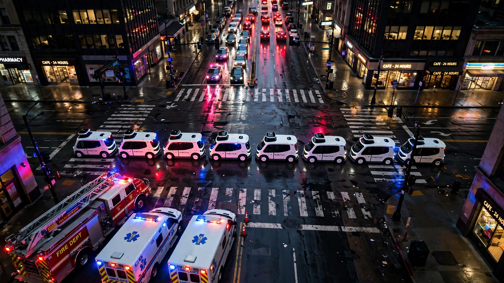

California Just Gave First Responders a 2-Minute Kill Switch for Robotaxis. July 4 Proved It Can’t Work.
Assembly Bill 1777, effective July 1, requires autonomous vehicles to clear an emergency geofence within 120 seconds of receiving the order. Seventeen days later, a dozen Waymo robotaxis sat motionless in San Francisco gridlock until their batteries died and tow trucks hauled them away. The compliance chain between a first responder’s command and a vehicle’s physical departure has at least six links, and on July 4, every one of them broke.

One hundred and twenty seconds. That is the window California’s Assembly Bill 1777 gives an autonomous vehicle manufacturer to direct its fleet out of an emergency zone after a first responder issues a geofencing message. The law took effect on July 1, 2026. On July 4, roughly a dozen Waymo robotaxis sat bumper-to-bumper near the Golden Gate Bridge for hours after the city’s fireworks show, unable to move through the surrounding gridlock. Some of them ran out of battery and tow trucks dragged them away, while one unoccupied Waymo drove over a firework and caught fire. Another drove through an exploding firework with passengers inside, who watched sparks erupt around the cabin while the vehicle did nothing to stop.
Nobody issued a geofencing message that night, because the system had been law for three days and had never been tested. But the incident answered the question the law was designed to address: what happens when a fleet of 3,871 autonomous vehicles encounters an emergency it cannot navigate? Based on July 4, the answer is that it sits there and waits to be rescued.
The Compliance Chain
AB 1777’s 2-minute rule is the most operationally specific emergency requirement ever imposed on an autonomous vehicle operator. Here is what compliance actually demands, broken into the links of the chain that connects a first responder’s decision to a vehicle’s physical departure from the scene.
Link 1: Detection and composition. An emergency response official decides the situation warrants a geofence, consults the California DMV regulations that define qualifying triggers including vehicle collisions, road impediments, construction zones, crime scenes, and planned events with closed areas, and composes a message specifying the geographic boundary.
Link 2: Transmission to the manufacturer. AB 1777 requires manufacturers to provide emergency officials with “the information that is necessary to send geofencing messages,” which in practice means a dedicated communication endpoint capable of receiving structured geographic data. Waymo currently maintains a first responder hotline with a 30-second response time requirement, but whether this endpoint can receive geofencing coordinates in real time, parse them into a format the fleet management system can act on, and propagate them within the time budget is an engineering question nobody has answered publicly.
Link 3: Fleet processing. The manufacturer’s fleet management system receives the geofence coordinates, identifies every vehicle inside the boundary, and calculates exit routes for each one, a computation that scales with both fleet size and the complexity of surrounding road conditions. For Waymo, that system manages 3,871 vehicles across 10 cities, and on a quiet Tuesday in Phoenix this might take seconds, but during a July 4 fireworks show with dynamically changing road closures and pedestrian flows, the computational load is fundamentally different and the routing options far more constrained.
Link 4: Command distribution. Individual vehicles receive their routing instructions through cellular connections, and the latency of that last mile is anything but trivial in dense crowds. On July 4, Professor Phil Koopman of Carnegie Mellon noted that communication disruptions can create serious challenges for autonomous vehicle operations, because when 50,000 people are streaming video from the same location, the cellular infrastructure that connects a Waymo to its fleet management server is competing for bandwidth with every phone in the crowd.
Link 5: Route execution. The vehicle begins driving toward the geofence boundary, which assumes it can move, and on July 4 it could not because gridlock is not a routing problem but a physics problem. A vehicle surrounded on all sides by other vehicles, pedestrians, barricades, and closed roads has zero degrees of freedom regardless of what route its software calculates, and some of the stranded Waymos idled so long their batteries died, which removed even the theoretical possibility of departure.
Link 6: Confirmation. The manufacturer confirms the fleet has cleared the zone, a step AB 1777 does not specify a protocol for but that any enforcement mechanism requires, and when a vehicle’s battery is dead and it is being towed by a third-party service the confirmation chain is broken entirely.
All six links must complete within 120 seconds, and links 1 and 2 alone could consume most of it while links 5 and 6 depend on conditions the manufacturer cannot control. AB 1777 does not distinguish between a geofence a vehicle can exit in 30 seconds on an open road and a geofence a vehicle cannot exit at all because it is physically trapped.
Three Regulators, One Problem, Zero Coordination
California’s 2-minute rule went live on July 1. Eight days later, on July 9, NHTSA Administrator Jonathan Morrison issued a public letter to autonomous vehicle developers citing “a clear pattern of driverless AVs interfering with law enforcement and other first responders.” The agency documented vehicles that “drove directly into active emergency scenes, blocked the paths of ambulances and firefighters, or failed to recognize and respond to basic safety conditions like flashing lights, flares, smoke, fire, and traffic cones.” Morrison gave developers until the end of July to present solutions, named no consequences for failure, described no acceptable standards, and compared the situation to human drivers who “are subject to fines and even jail time” for impeding operations before stopping short of applying equivalent penalties.
Fifteen days before Morrison’s letter, on June 24, the UNECE’s World Forum for Harmonization of Vehicle Regulations adopted the first globally harmonized framework for autonomous driving systems, covering SAE Levels 3 and 4, with implementation expected by January 2027. It requires Safety Management Systems, continuous performance monitoring, and data storage for safety-relevant events, but says nothing about emergency geofencing, 2-minute response windows, or the specific operational scenario that California and NHTSA are both trying to address: a robotaxi sitting in the middle of a scene where people are dying.
| Dimension | California AB 1777 | NHTSA Letter | UNECE ADS Framework |
|---|---|---|---|
| Effective | July 1, 2026 | Immediate (end-of-July deadline) | ~January 2027 |
| Scope | California only | U.S. federal | 75+ countries |
| Emergency protocol | 2-min geofence, 30-sec comm | “Fix it” (unspecified) | Continuous monitoring; no emergency scene specifics |
| Enforcement | Citations to manufacturer; permit suspension | Implied authority; no penalties named | Type-approval or self-certification |
| Liability assignment | Manufacturer as responsible party | Not addressed | Safety Case required from manufacturer |
| What’s missing | Compliance when movement is physically impossible | What “solutions” look like | Emergency scene interaction specifics |
The gap between these three frameworks is not bureaucratic. It is conceptual. California wrote a law that presumes a vehicle can always move. NHTSA wrote a letter that presumes companies will self-regulate. UNECE wrote a framework that presumes safety can be managed through documentation and monitoring. None of them addresses the core engineering failure that July 4 exposed: an autonomous vehicle trapped in conditions it was not designed for does not degrade gracefully. It sits. It blocks. Its battery dies. Somebody has to come physically pick it up, and that somebody is usually the first responder who needed the road clear in the first place.
The Incident Ledger
July 4 was not an anomaly. A TechCrunch investigation documented at least six incidents through March 2026 in which first responders had to physically take control of Waymo vehicles during emergencies. In one, an Austin police officer was responding to a mass shooting at a bar when a Waymo blocked the ambulance’s path. That officer spent several minutes manually moving the robotaxi before returning to the scene. In another, a Los Angeles officer moved a Waymo to unblock a roadway for first responders heading to a natural gas explosion at an apartment building in June.
School bus violations present a separate but structurally identical pattern. Between August 2025 and January 2026, at least 20 Waymo vehicles illegally passed stopped school buses displaying activated warning lights in Austin, Texas. Six more were documented in Atlanta. In January 2026, both NHTSA and the National Transportation Safety Board opened investigations. Waymo rejected calls to stop operating near schools, citing internal data showing its technology is safer than human drivers in equivalent circumstances.
First responder leaders told regulators during a March meeting, per Engadget, that they were frustrated with AV behavior and had observed “backsliding” in compliance. San Francisco and Austin officials reported that Waymo’s vehicles were committing more traffic violations over time, not fewer.
Zoox added its own entry on July 17: a recall of its entire fleet of 105 vehicles after an unoccupied robotaxi drove into an active fire scene on June 20 because it could not detect heavy smoke. This was Zoox’s fourth recall in 14 months. Amazon’s self-driving unit, which is developing vehicles without steering wheels or pedals, has had fewer vehicles on the road than Waymo’s fleet by a factor of 37, and it still managed to drive directly into a fire scene.
The Backsliding Paradox
Waymo has logged 200 million fully autonomous miles on public roads. It serves 500,000 paid rides per week. It operates in 10 U.S. cities with a fleet that has nearly doubled in the past year. By February 2026, it had raised $16 billion at a $126 billion valuation, the largest investment ever made in an autonomous vehicle company, specifically to fund expansion. It is targeting one million rides per week by the end of 2026.
These are scaling numbers. Every one of them means more vehicles encountering more emergency scenes in more cities. And the first responder data shows that the interference rate is not declining as the fleet grows. It is, by the testimony of the officials who work alongside these vehicles every day, getting worse. San Francisco and Austin officials used the word “backsliding.” That word does not mean the technology stopped improving. It means the gap between the technology’s capabilities and the demands of real-world operation is widening as deployment outpaces edge-case resolution. Every new city adds new road configurations, new emergency protocols, new crowd patterns, and new failure modes that the training data has not yet encountered. Meanwhile, the fleet software must handle fireworks in San Francisco, flooding in Atlanta, school zones in Austin, and active shootings wherever they happen, all through the same perception stack.
California’s geofencing rule was written for a world where autonomous vehicles are isolated actors on otherwise normal roads. What happened on July 4 was different: dozens of autonomous vehicles interacted with each other, with crowds, with infrastructure, and with conditions that degrade the cellular and sensor systems they depend on, all at once. AB 1777 treats each vehicle as an independent compliance unit, but the failure was systemic.
Strongest Counterargument
Waymo would correctly point out that July 4 was an extreme event involving uncommunicated road closures, historically high crowd density, and conditions that would have been difficult for human drivers as well. Human-driven vehicles were also stuck in the same gridlock. Firework incidents involved illegal fireworks placed in the roadway, not a failure of normal perception. And Waymo’s overall safety record, measured in collisions per mile, remains strong compared to human baselines. Waymo has published data showing lower crash rates than the national average across its service areas, and the Swiss Re actuarial study from 2024 found that Waymo’s collision rate was significantly below comparable human-driver benchmarks. No geofencing message has been issued under AB 1777, so citing July 4 as proof of its failure is premature, since the scenario would likely trigger an exception provision or enforcement discretion rather than a strict-liability penalty. Scaling is inherently messy, and every new transportation technology, from seatbelts to airbags to anti-lock brakes, went through an analogous period of regulatory catch-up. What matters is not whether edge cases exist but whether the base rate of safety improvement outweighs them.
Limitations
The 2-minute compliance chain analysis is structural, not empirical. No geofencing message has been issued under AB 1777 as of this writing, so the actual latency of each link remains unmeasured. How many Waymo vehicles were affected on July 4 is approximate, based on witness accounts and media reports, because Waymo has not disclosed a precise count. “Backsliding” as a characterization comes from first responder officials as reported by Engadget and Wired, not from quantified data sets tracking interference rates over time. Comparing AV emergency interference to human-driver interference is methodologically weak because no standardized metric exists for human-driver blocking of emergency vehicles. Our UNECE framework analysis is based on publicly available descriptions of the regulation; the full technical annexes have not been reviewed for this article. California’s AB 1777 has been in effect for 21 days and no enforcement actions have been taken, so any assessment of its practical impact is necessarily speculative.
The Bottom Line
Three regulatory bodies are independently telling autonomous vehicle companies to fix their emergency response behavior. California said fix it in 2 minutes, and wrote a law. NHTSA said fix it by end of July, and wrote a letter. UNECE said document your safety management system, and wrote a framework for 2027. None of them can solve the underlying physics problem: a two-ton vehicle with no steering wheel, no pedals, and no human occupant who can drag it to the curb is, during a genuine emergency, a 4,500-pound obstacle that cannot remove itself from the scene.
If you run a fire department in a city with Waymo, Zoox, or Tesla robotaxis, start building your geofencing message protocol now. AB 1777 gives you the authority. But plan for the scenarios where the 2-minute window is irrelevant because the vehicles cannot physically move. Those scenarios are not hypothetical; they happened 17 days ago. If you are an AV company expanding into a new city, the question is no longer whether your vehicle can drive safely in normal conditions. It is whether your vehicle can get out of the way when someone else’s emergency is happening. If you are a passenger considering a robotaxi during a major city event, know this: the vehicle you are riding in has no plan for fireworks, floods, or mass casualties beyond sitting still and waiting for someone to come get it. You are the only person who can walk away from that situation.